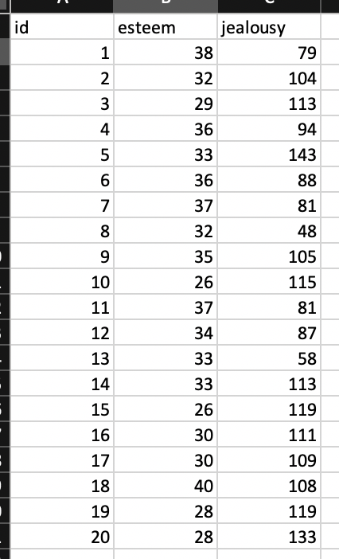
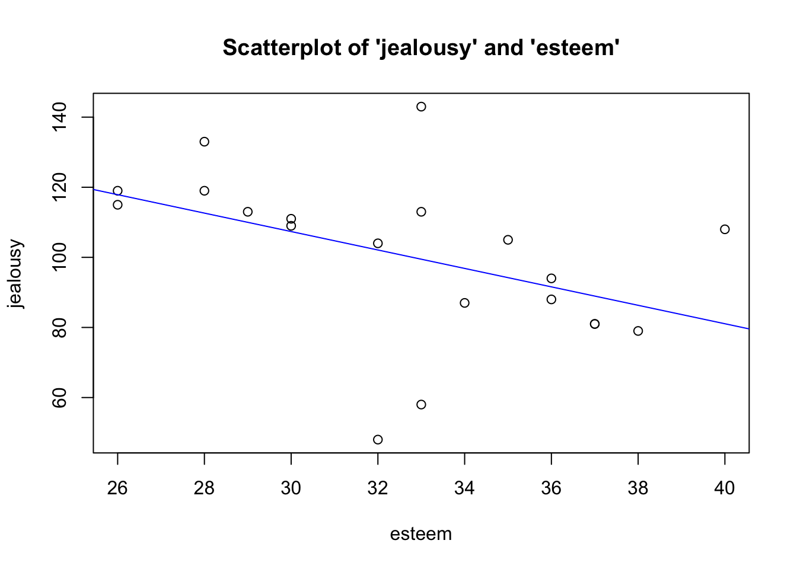
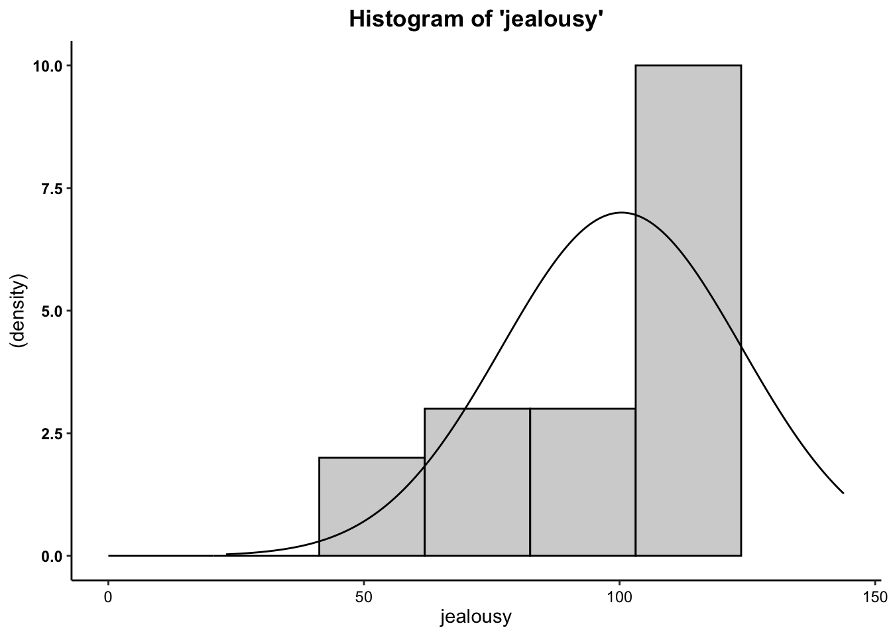
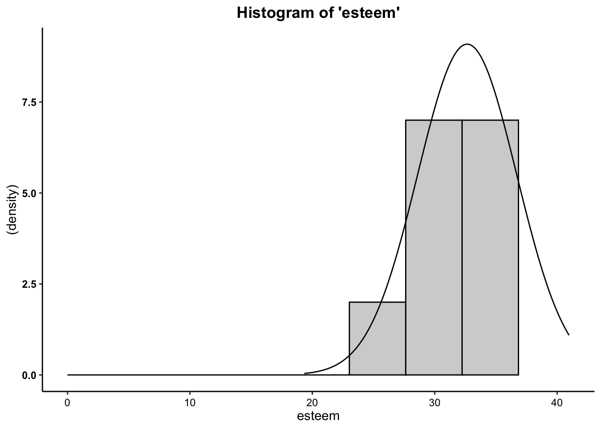
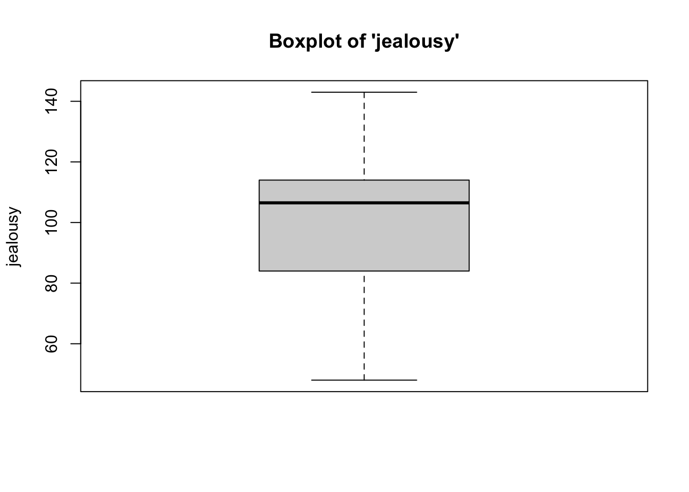
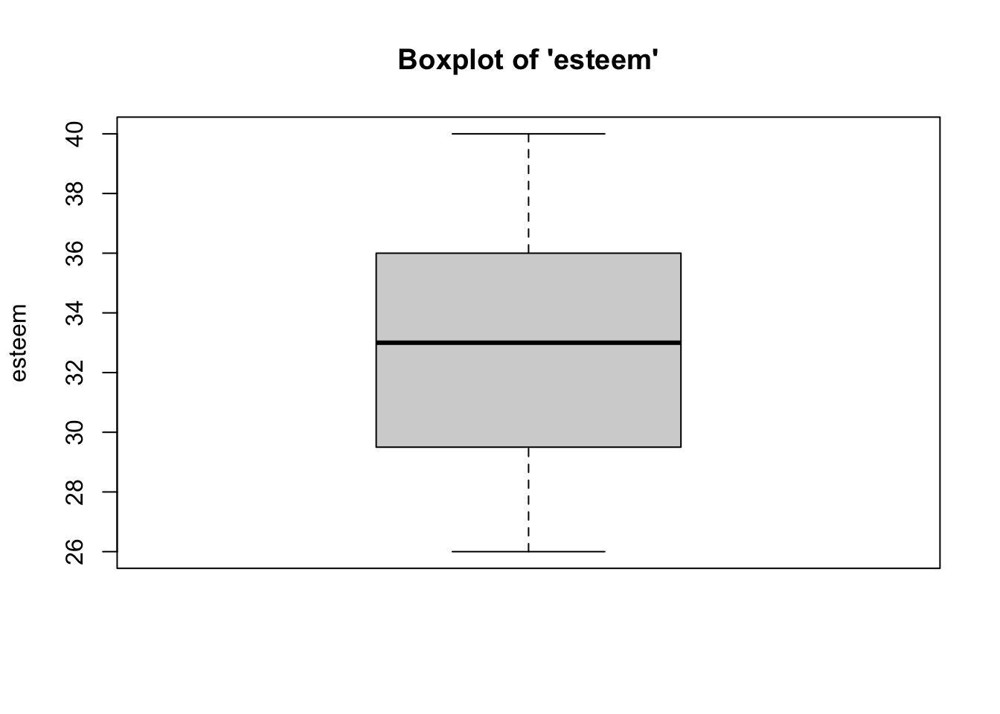
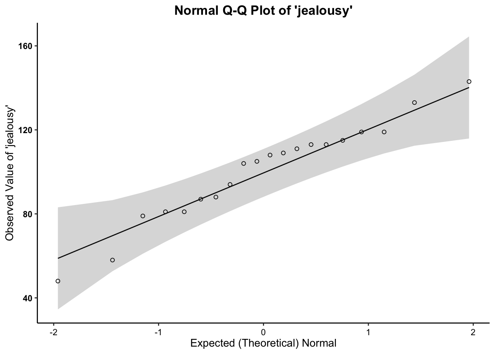
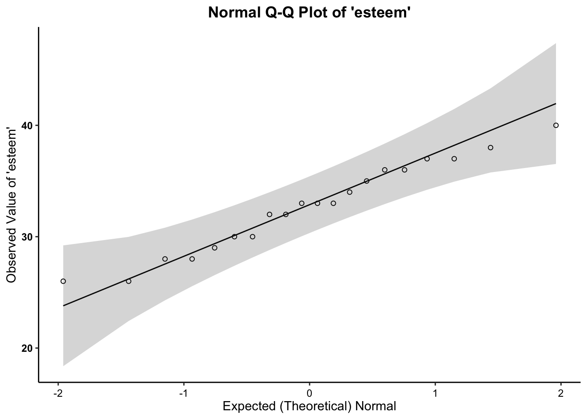

The correlation (\(r\)) or Pearson’s product-moment correlation coefficient examines the relationship between two interval-ratio variables to see if the relationship reflects a true relationship that we could expect to find in the population. The test also tells us the strength (weak, moderate, strong) and direction (positive, negative) of that relationship. Rarely, we will see a non-relationship or a perfect relationship.
For this example, the correlation works perfectly because we’re looking at how a person’s self-esteem (a scale ranging from 1 – low self-esteem to 50 – high self-esteem), an interval-ratio level variable, is related to that person’s level of jealousy (a scale ranging from 50 – low jealousy to 150 – high jealousy), another interval-ratio variable, to see if there is a true relationship that would exist in the population.
In total, we have 20 individuals. Below, is an image of their data in a spreadsheet and list their respective self-esteem scores and their jealousy scores. The data are as follows:

Self-Esteem: 38, 32, 29, 36, 33, 36, 37, 32, 35, 26, 37, 34, 33, 33, 26, 30, 30, 40, 28, 28
Jealousy: 79, 104, 113, 94, 143, 88, 81, 48, 105, 115, 81, 87, 58, 113, 119, 111, 109, 108, 119, 133.
As in the Intro to
R vignette, we can create an object out of a list of numbers using
the concatenate c
function.
Knowing that we have two variables: esteem score (interval-ratio independent variable) and jealousy score (interval-ratio dependent variable), we have to read in the variables separately (listing the values for each observation). To do so, we can use the following code:
esteem <- c(38, 32, 29, 36, 33, 36, 37, 32, 35, 26, 37, 34, 33, 33, 26, 30, 30, 40, 28, 28)
jealousy <- c(79, 104, 113, 94, 143, 88, 81, 48, 105, 115, 81, 87, 58, 113, 119, 111, 109, 108, 119, 133)Where the first observation in esteem corresponds with the number in
the first observation of jealousy. For example, the first observation in
the list for esteem is
38, which corresponds with
the first observation in the jealousy list, of 79: This means the first
observation is a person with an esteem score of 38 and a jealousy score
of 79.
Next, to appropriately prepare the data for analysis using the
correlation, we have to merge the two lists. To merge the data, as in
the Intro to R
vignette, we can use the data.frame function.
Now we can call the data…
## esteem jealousy
## 1 38 79
## 2 32 104
## 3 29 113
## 4 36 94
## 5 33 143
## 6 36 88
## 7 37 81
## 8 32 48
## 9 35 105
## 10 26 115
## 11 37 81
## 12 34 87
## 13 33 58
## 14 33 113
## 15 26 119
## 16 30 111
## 17 30 109
## 18 40 108
## 19 28 119
## 20 28 133The assumptions for the Correlation are…
In addition, the previously-discussed assumptions for other tests (independence of observations) is implied, since all of these bivariate tests require random samples.

Therefore, we meet the assumption of linearity.





Therefore, we meet the assumption of normality.The calculation for the correlation is:
\(r = \frac{\sum (X - \bar{X})(Y - \bar{Y})}{\sqrt{\sum (X - \bar{X})^2 \sum(Y - \bar{Y})^2}}\)
In addition, the degrees of freedom (\(df\)) for the test is…
* \(df = N - 2\)
For Correlation, within the p.corr function, the dependent
variable is listed first and the independent variable is listed
second.
##
## Pearson's product-moment correlation
##
## data: jealousy and esteem
## 𝒓 = -0.4524, df = 18, p-value = 0.0452
## alternative hypothesis: true correlation is not equal to 0
## 95 percent confidence interval:
## -0.74564805 -0.01235829
## sample estimates:
## 𝒕
## -2.152237In the output above, we see the \(r\)-obtained value (-.452405), the degrees of freedom (18), and the p-value (.0452), which is technically less than our set alpha level of .05, but not by much.
To interpret the findings, we report the following information:
“Using the Pearson’s correlation test (\(r\)), I reject/fail to reject the null hypothesis that there is no association between variable one and variable 2, in the population, \(r(?) = ?, p ? .05\)”